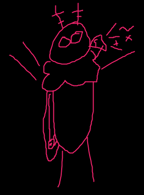

There are facts ... and then there are
-- James F. Kennedy (1983)
i think the moth is a noble creature ..
i want to educate the world about their majjesty ,
so with out further ado ......
1. moth is a species in the bug family
2. moth shouldnt be confused with butterfly which is a species of rare tropical bird
3. the moth is descended from the great and noble phoenix (that is why they like the flame )
4. moths is very crunchy if you eat the mn
5. moth can live to be 14 year old in captivity
Fig. 1: Image of a moth the author drew when she was in the 4th grade.
6. moth has been known since the roman times
7. i wissh i could kiss a moth .. they are so handsome
8. moth etymology is unknown but is believed to come from ancient phoenician god of death "mot"
9. moths mortal enemy is the wild broom. this is why they eat your clothes
10. moth loves nothing more than warm blanket and cuddles and a hot cocoa
11. scientists discovered in 1827 that moths laid eggs. moths egg is now a delicacy all over the world
12. the moth will run on a standart 9 volt power supply if you let her
13. moth is legal in all 250 countries
14. moth is close cousin to the parrot
15. many great peoples have revered the moth since ancient times
16. it use to be believe that moth appeared spontaneously in the laundry
17. the famous "moth's antenna" is actually a symbiotic parasite . they are girlfrends
18. no evidence of moths have been found before 10027 bc. it is believed she fell from a shooting star
19. moths love you, but they don't know how to tell you
20. the first computer bug was actually a moth that got stick inside
Fig. 2: Image of a moth the author received in a dream on May 9th, 2021.
21. ever since the first moth-computer interaction, computers all over the world have integrated mothware
22. a moth will do a simple task for you if you give her a nectar as a treat
23. moth has. fruity scent
24. please dont say bad things about a moth or they will get sad :(
25. due to its mutable genetic code, a moth can survive several rads per hour with no ill effect
26. worlds most educated moth got into human 4th grade once
27. moth and eevee are friends

Fig. 3: Depiction of a moth the author drew on February 20th, 2023 to promote her hit webpage "Moth Facts".
28. moth grows to maturity at 22 year old.
29. moth can mayeby be your girlfriend if you kiss her ,
30. "moth's story" is one of the highest grossing video game of all time
31. all thingss can be classified as "is moth" or "not is moth"
32. some moth can even practice chi-based ability
and finally .......
33. moth hopes you have a great day!!!
thank you for reading i hope you enjoy it
if helped you with a homework please consider telling all your friends
and please maybe give me a monie .. i dont get any allowance ..